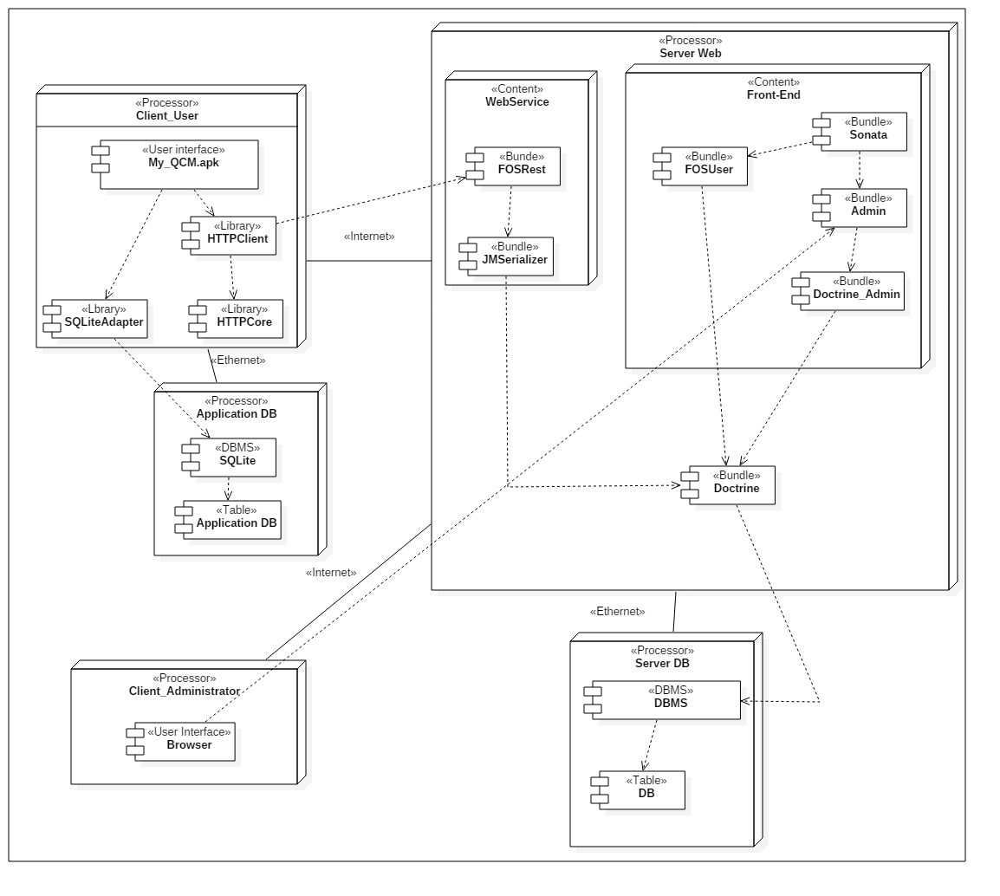

Le node client_user représente la partie applicative de la solution et regroupe plusieurs composants :
- Une interface utilisateur représentant l'Apk de l'application, le programme exécuté sur le téléphone.
Cet Apk dispose de deux librairies :
-HttpClient qui est la librairie qui permet d'exécuter les requêtes de communication avec le WebService, elle hérite de HTTPCore.
- SQLiteAdapter qui elle est une libraire créer qui permet la communication avec la base de données en SQLite. Elle contient toute les requête de gestion de la base (Ajout, listé, suppression...).
Ce node représente la partie base de donnée de l'application qui est composé de :
- Un système de gestion de base de données SQLite
- Ainsi que de la base de données
Le node Client_Administrator illustre la partie d'administration de la solution côté client, c’est l'interface par navigateur donnant accès au front-end.
Ce node exprime toute la partie serveur web et est divisé en 3 parties :
- Le node WebService
- Le node Front-end
- Le Bundle Doctrine qui permet à Symfony de communiquer avec le système gestion de base de données contenu dans le Node Server DB
Node permettant la réception et l'envoi de donnée entre l'application et le serveur Web.
Il est composé de deux Bundles :
- FOSRest qui permet de générer des urls renvoyant des flux Json pour permettre la circulation des infos entre l'applicatif et le serveur
- JMSerializer permet de sérialiser donc de mettre en forme les données envoyées via doctrine qui seront par la suite renvoyer par FOSREST Bundle
Node qui permet d'administrer la solution au travers d'un portail web via plusieurs Bundle Symfony :
- Bundle Sonata permettant de mettre en place une interface d'administration facilement et rapidement. Qui est en fait un bundle regroupant d'autre bundle :
- Bundle Admin Fournissant à partir des informations reçu par le Bundle Doctrine-Admin une interface visuel auto-généré.
A l'image du Node Application DB représente la partie base de données de notre serveur web.
En effet nous disposons également d'un système de gestion de base de données ainsi que de la base de données de l'application.
Créé avec HelpNDoc Personal Edition: Créer facilement des fichiers Qt Help